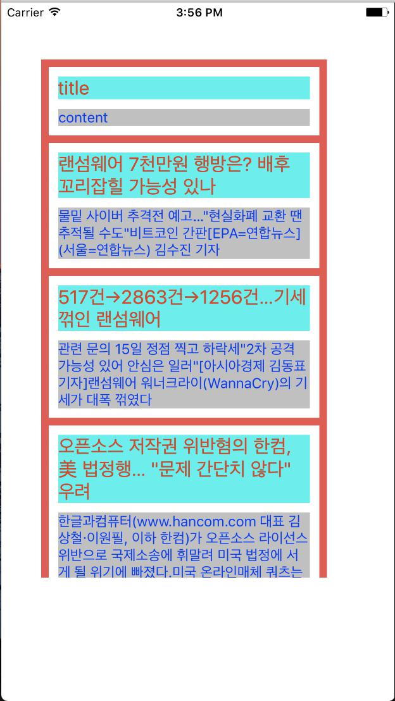
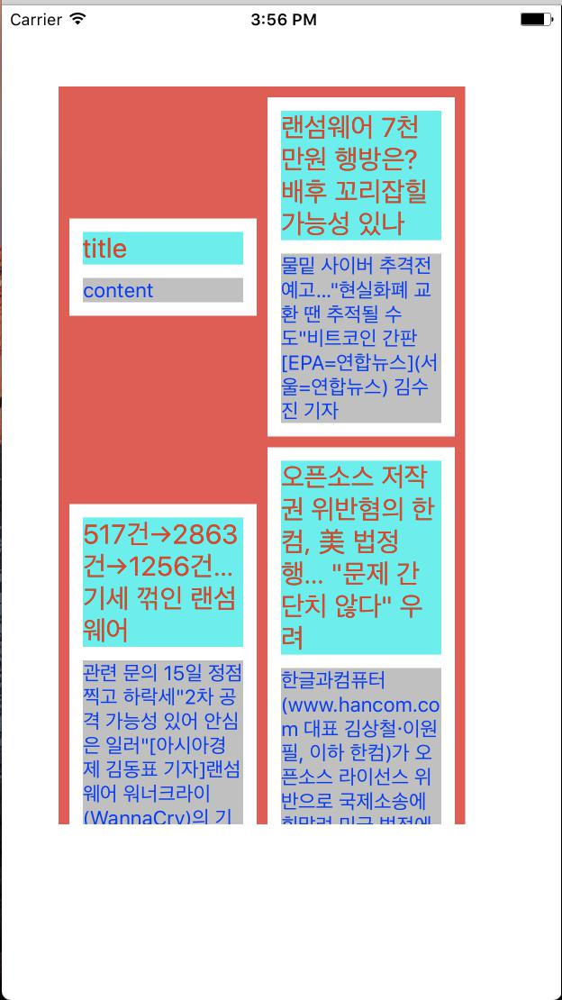

Cell의 내용에 따라 높이가 변하는 TableView를 만드는 방법을 알아보자

이렇게 각 셀의 높이가 서로 다른 테이블 뷰를 만드려고 합니다.
item 파일 만들기
각각의 셀의 정보를 담고 있는 item파일을 만듭시다

- Swift파일을 하나 만듭니다
 2. TestItem 이라고 이름을 붙였습니다
2. TestItem 이라고 이름을 붙였습니다
1
2
3
4
5
6
7
8
9
| class TestItem {
var title:String
var content:String
init(title:String, content:String) {
self.title = title
self.content = content
}
}
|
Cell.swift 파일 만들기
각각의 셀의 swift파일 만듭시다

- Cocoa Touch Class를 하나 만든 다음에
 2. Subclass of는 UICollectionViewCell을 선택하고 TestCell을 사용했습니다.
2. Subclass of는 UICollectionViewCell을 선택하고 TestCell을 사용했습니다.
1
2
3
4
5
6
7
8
9
10
11
12
13
14
15
16
17
18
19
20
21
22
23
| class TestCell: UICollectionViewCell {
static var measureView = Bundle.main.loadNibNamed(String(describing: TestCell.self), owner: nil, options: nil)?.first as! TestCell
@IBOutlet weak var titleLabel: UILabel!
@IBOutlet weak var contentLabel: UILabel!
@IBOutlet weak var rootWidth: NSLayoutConstraint!
var item: TestItem!
func setItem(_ item: TestItem) {
self.item = item
titleLabel.text = item.title
contentLabel.text = item.content
}
static func getDynamicHeight(of width: CGFloat, item:TestItem) -> CGFloat {
measureView.setItem(item)
measureView.rootWidth.constant = width
let newSize = measureView.systemLayoutSizeFitting(UILayoutFittingCompressedSize)
return newSize.height
}
}
|
measureView는 각의 cell의 높이를 구할 때 사용하는 테스트용 Cell입니다.
이를 이용해서 getDynamicHeight 함수에서 width와 item이 주어지면 이를 measureView에 넣어서
나오는 height를 반환해 줍니다.
Cell.xib 파일 만들기
각각의 셀의 xib파일 만듭시다

- Empty xib파일을 하나 만듭니다
 2. TestCell이라고 swift파일의 이름과 똑같이 붙였습니다
2. TestCell이라고 swift파일의 이름과 똑같이 붙였습니다
 3. CollectionViewCell을 넣습니다
3. CollectionViewCell을 넣습니다
 4. 그 안에 View를 넣습니다
4. 그 안에 View를 넣습니다
 5. 이 View의 constraint를 위와 같이 합니다
5. 이 View의 constraint를 위와 같이 합니다
 6. label을 2개 넣습니다
6. label을 2개 넣습니다
 7. 두 label의 폰트와 폰트 색과 폰트 크기와 배경등을 적당히 하고
Lines를 0으로 해야 합니다!
7. 두 label의 폰트와 폰트 색과 폰트 크기와 배경등을 적당히 하고
Lines를 0으로 해야 합니다!
 8. Title label의 constraint를 위와 같이 합니다
8. Title label의 constraint를 위와 같이 합니다
 9. Content label의 constraint를 위와 같이 합니다
9. Content label의 constraint를 위와 같이 합니다
 10. 그러면 위와 같이 빨간색으로 conflict가 생겼다고 할 겁니다
10. 그러면 위와 같이 빨간색으로 conflict가 생겼다고 할 겁니다
 11. CollectionViewCell을 선택해서 적당히 conflict가 없어지는 Height로 설정합니다.
11. CollectionViewCell을 선택해서 적당히 conflict가 없어지는 Height로 설정합니다.
 12. 가장 root인 View의 width constraint를 넣습니다.
12. 가장 root인 View의 width constraint를 넣습니다.
 13. CollectionViewCell을 선택하고 Class를 TestCell로 합니다.
13. CollectionViewCell을 선택하고 Class를 TestCell로 합니다.
 14. titleLabel과 contentLabel과 width를 outlet과 연결합니다
14. titleLabel과 contentLabel과 width를 outlet과 연결합니다
TestTableView 만들기
이제 이 셀들을 보여주는 TableView 가 필요합니다.

- 우리는 PagingTableView를 사용 할 겁니다. 이건 제가 만든 건데 어떻게 구현 되어 있는지는 이해 안 하셔도 됩니다.
 2. Swift파일을 만듭니다
2. Swift파일을 만듭니다
 3. TestTableView라고 이름을 붙였습니다.
3. TestTableView라고 이름을 붙였습니다.
1
2
3
4
5
6
7
8
9
10
11
12
13
14
15
16
17
18
19
20
21
22
23
24
25
26
27
28
29
30
31
32
33
34
35
36
37
38
39
40
41
42
43
44
45
46
47
| import UIKit
import Foundation
class TestTableView: PagingTableView, PagingTableViewDelegate, PagingTableViewDataSource {
func initialize(nowVC: UIViewController) {
super.columnNum = 1
super.sectionInset = CGFloat(8)
super.itemSpacing = CGFloat(8)
super.delegate = self
super.initialize(nowVC: nowVC, dataSource: self)
}
func setItem(cell: UICollectionViewCell, item: Any) -> UICollectionViewCell {
if let cell = cell as? TestCell {
if let item = item as? TestItem {
cell.setItem(item)
}
}
return cell
}
func loadMoreItems(page: Int, callback: @escaping ([Any]) -> Void) {
var items:[TestItem] = []
items.append(TestItem(title:"title", content:"content"))
items.append(TestItem(title:"랜섬웨어 7천만원 행방은? 배후 꼬리잡힐 가능성 있나", content:"물밑 사이버 추격전 예고…\"현실화폐 교환 땐 추적될 수도\"비트코인 간판[EPA=연합뉴스](서울=연합뉴스) 김수진 기자"))
items.append(TestItem(title:"517건→2863건→1256건…기세 꺾인 랜섬웨어", content:"관련 문의 15일 정점 찍고 하락세\"2차 공격 가능성 있어 안심은 일러\"[아시아경제 김동표 기자]랜섬웨어 워너크라이(WannaCry)의 기세가 대폭 꺾였다"))
items.append(TestItem(title:"오픈소스 저작권 위반혐의 한컴, 美 법정행… \"문제 간단치 않다\" 우려", content:"한글과컴퓨터(www.hancom.com 대표 김상철·이원필, 이하 한컴)가 오픈소스 라이선스 위반으로 국제소송에 휘말려 미국 법정에 서게 될 위기에 빠졌다.미국 온라인매체 쿼츠는 지난"))
items.append(TestItem(title:"title title title title", content:"content content content content"))
callback(items)
}
func getNibName() -> String {
return String(describing: TestCell.self)
}
func didSelected(item: Any) {
print("selected! \(item)")
}
func calcHeight(width:CGFloat, item:Any) -> CGFloat {
return TestCell.getDynamicHeight(of: width, item: item as! TestItem)
}
}
|
func initialize(nowVC: UIViewController)
초기화 하는 함수입니다 여기서
columnNum은 테이블의 열의 갯수
sectionInset은 셀과 바깥 테이블과의 간격
itemSpacing은 셀 사이의 간격을 나타냅니다
func setItem(cell: UICollectionViewCell, item: Any) -> UICollectionViewCell
주어진 item을 가지고 주어진 cell에 데이터를 넣습니다
func loadMoreItems(page: Int, callback: @escaping ([Any]) -> Void)
page가 주어지면 이 page가지고 Item을 만들어서 callback함수를 실행시킵니다
func getNibName() -> String
이 테이블에 사용하는 xib파일의 이름을 반환해 주는 함수 입니다.
func didSelected(item: Any)
만약에 셀이 클릭되었을 때 실행되는 함수입니다.
func calcHeight(width:CGFloat, item:Any) -> CGFloat
주어진 width와 item이 있을 때 셀의 높이를 반환해 주는 함수입니다.
ViewController에서 사용하기
이제 이 셀들을 보여주는 TableView 가 필요합니다.

- Main.storyboard에 적당히 색을 칠한 view를 넣고 CustomClass를 TestTableView로 합니다.
1
2
3
4
5
6
7
8
9
10
11
12
13
14
15
16
17
18
| import UIKit
class ViewController: UIViewController {
@IBOutlet weak var testTableView: TestTableView!
override func viewDidLoad() {
super.viewDidLoad()
testTableView.initialize(nowVC: self)
}
override func didReceiveMemoryWarning() {
super.didReceiveMemoryWarning()
}
}
|
ViewController파일에 위와 같이 하고 testTabelView와 storyboard상의 그 것과 연결해 줍니다
결과

columnNum이 2일 경우
columnNum이 1일 경우